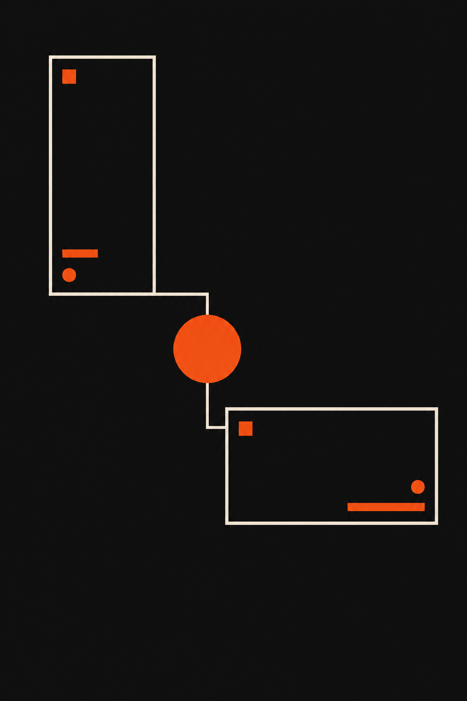

Flovah NoteJul.2026
인스타그램과 유튜브,
보는 방식이
다릅니다
보는 방식이
다릅니다
같은 콘텐츠를 올려도 결과가 다른 이유.
채널별 시각 전략의 차이를 정리합니다.
채널별 시각 전략의 차이를 정리합니다.
Flovah NoteJul.2026
01 · 정의
두 채널은 속성 자체가
다릅니다
다릅니다
인스타그램은 이미지 기반, 세로형, 탐색 중심.
유튜브는 영상 기반, 가로형, 검색 중심.
시선이 움직이는 방향부터 다르기 때문에
시각 전략도 완전히 달라야 합니다.
유튜브는 영상 기반, 가로형, 검색 중심.
시선이 움직이는 방향부터 다르기 때문에
시각 전략도 완전히 달라야 합니다.
Flovah NoteJul.2026
02 · 속성
인스타그램의
채널 속성
채널 속성
피드, 릴스, 스토리 모두 세로 9:16
모바일 풀스크린 기준
모바일 풀스크린 기준
평균 체류 1.7초, 스크롤을 멈추게 하는
첫 인상이 전부
첫 인상이 전부
텍스트보다 무드, 색감, 타이포가 우선인
감각 중심 플랫폼
감각 중심 플랫폼
Flovah NoteJul.2026
03 · 속성
유튜브의
채널 속성
채널 속성
가로 16:9. 썸네일로 클릭을 유도하고
영상 안에서 정보를 구조적으로 전달합니다.
체류 시간이 곧 알고리즘 성과입니다.
인스타그램은 "멈추게" 하는 것,
유튜브는 "머물게" 하는 것이 목표입니다.
영상 안에서 정보를 구조적으로 전달합니다.
체류 시간이 곧 알고리즘 성과입니다.
인스타그램은 "멈추게" 하는 것,
유튜브는 "머물게" 하는 것이 목표입니다.
Flovah NoteJul.2026
04 · 차이
시각 전략,
이렇게 다릅니다
이렇게 다릅니다
INSTA큰 타이포 + 강렬한 색감 = 즉각 반응
YOUTUBE얼굴 + 감정 + 키워드 = 클릭 유도
INSTA세로 화면, 몰입형 레이아웃
YOUTUBE가로 화면, 정보 계층, 가독성 중심
INSTA피드 통일감 = 브랜드 무드 전달
YOUTUBE썸네일 시리즈화 = 채널 정체성 구축
Flovah NoteJul.2026
05 · 구조
인스타그램 시각 전략
핵심 네 가지
핵심 네 가지
Color
브랜드 컬러 3색 이내
피드 전체의 톤을 통일하는
색상 팔레트가 핵심
색상 팔레트가 핵심
Typo
첫 줄에 핵심 카피
스크롤 1.7초 안에 읽히는
텍스트 크기와 위치
텍스트 크기와 위치
Layout
세로 풀화면 설계
9:16 또는 4:5 비율,
여백보다 밀도 중심
여백보다 밀도 중심
Feed
그리드 일관성
개별 게시물보다
전체 피드의 무드가 중요
전체 피드의 무드가 중요
Flovah NoteJul.2026
06 · 솔직히
유튜브는 썸네일에서
결정됩니다
결정됩니다
클릭률이 조회수를 결정하고,
체류 시간이 추천 알고리즘을 결정합니다.
썸네일은 예쁜 이미지가 아니라
클릭을 설계하는 장치입니다.
인물 표정 + 3단어 이내 텍스트 + 고대비.
이 공식이 기본입니다.
체류 시간이 추천 알고리즘을 결정합니다.
썸네일은 예쁜 이미지가 아니라
클릭을 설계하는 장치입니다.
인물 표정 + 3단어 이내 텍스트 + 고대비.
이 공식이 기본입니다.
Flovah NoteJul.2026
07 · 원칙
같은 주제라도
이렇게 나눠야 합니다
이렇게 나눠야 합니다
카드뉴스·릴스로 핵심만 압축, 3초 각인
인스타 → 감각 요약
인스타 → 감각 요약
같은 주제를 5~15분 영상으로
유튜브 → 구조적 설명
유튜브 → 구조적 설명
인스타에서 관심, 유튜브에서 깊이로
연결 → 상호 유입 설계
연결 → 상호 유입 설계
Flovah NoteJul.2026
08 · 제안
채널의 속성을 아는 것이
시각 전략의 시작입니다
시각 전략의 시작입니다
인스타그램은 멈추게 하는 힘,
유튜브는 머물게 하는 힘.
"이건 어떤 화면에서
보일 콘텐츠인가?"
다음 콘텐츠를 만들기 전에
이것부터 확인해보세요.
유튜브는 머물게 하는 힘.
"이건 어떤 화면에서
보일 콘텐츠인가?"
다음 콘텐츠를 만들기 전에
이것부터 확인해보세요.
Flovah NoteJul.2026
복잡한 이야기를
명료하게, 완벽하게.
명료하게, 완벽하게.
www.flovah.com
Upload Note
캡션
같은 콘텐츠를 올려도 인스타그램과 유튜브의 결과는 다릅니다.
인스타그램은 멈추게 하는 힘, 유튜브는 머물게 하는 힘.
채널별 시각 전략의 차이를 정리했습니다.
인스타그램은 멈추게 하는 힘, 유튜브는 머물게 하는 힘.
채널별 시각 전략의 차이를 정리했습니다.
해시태그